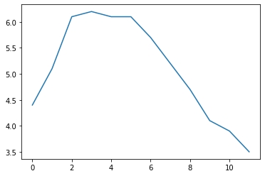

Code
import pandas as pdData Analysis
June 4, 2023
Tools - pandas
The pandas library provides high-performance, easy-to-use data structures and data analysis tools. The main data structure is the DataFrame, which you can think of as an in-memory 2D table (like a spreadsheet, with column names and row labels). Many features available in Excel are available programmatically, such as creating pivot tables, computing columns based on other columns, plotting graphs, etc. You can also group rows by column value, or join tables much like in SQL. Pandas is also great at handling time series.
This notebook follows the fastai style conventions.
Prerequisites: * NumPy – if you are not familiar with NumPy, we recommend that you go through the NumPy tutorial now.
First, let’s import pandas. People usually import it as pd:
Series objectsThe pandas library contains these useful data structures: * Series objects, that we will discuss now. A Series object is 1D array, similar to a column in a spreadsheet (with a column name and row labels). * DataFrame objects. This is a 2D table, similar to a spreadsheet (with column names and row labels). * Panel objects. You can see a Panel as a dictionary of DataFrames. These are less used, so we will not discuss them here.
SeriesLet’s start by creating our first Series object!
ndarraySeries objects behave much like one-dimensional NumPy ndarrays, and you can often pass them as parameters to NumPy functions:
Arithmetic operations on Series are also possible, and they apply elementwise, just like for ndarrays:
Similar to NumPy, if you add a single number to a Series, that number is added to all items in the Series. This is called * broadcasting*:
The same is true for all binary operations such as * or /, and even conditional operations:
Each item in a Series object has a unique identifier called the index label. By default, it is simply the rank of the item in the Series (starting at 0) but you can also set the index labels manually:
alice 68
bob 83
charles 112
darwin 68
dtype: int64You can then use the Series just like a dict:
You can still access the items by integer location, like in a regular array:
To make it clear when you are accessing by label or by integer location, it is recommended to always use the loc attribute when accessing by label, and the iloc attribute when accessing by integer location:
Slicing a Series also slices the index labels:
This can lead to unexpected results when using the default numeric labels, so be careful:
0 1000
1 1001
2 1002
3 1003
dtype: int64Oh look! The first element has index label 2. The element with index label 0 is absent from the slice:
But remember that you can access elements by integer location using the iloc attribute. This illustrates another reason why it’s always better to use loc and iloc to access Series objects:
dictYou can create a Series object from a dict. The keys will be used as index labels:
alice 68
bob 83
colin 86
darwin 68
dtype: int64You can control which elements you want to include in the Series and in what order by explicitly specifying the desired index:
When an operation involves multiple Series objects, pandas automatically aligns items by matching index labels.
Index(['alice', 'bob', 'charles', 'darwin'], dtype='object')
Index(['alice', 'bob', 'colin', 'darwin'], dtype='object')alice 136.0
bob 166.0
charles NaN
colin NaN
darwin 136.0
dtype: float64The resulting Series contains the union of index labels from s2 and s3. Since "colin" is missing from s2 and "charles" is missing from s3, these items have a NaN result value. (ie. Not-a-Number means missing).
Automatic alignment is very handy when working with data that may come from various sources with varying structure and missing items. But if you forget to set the right index labels, you can have surprising results:
s2 = [ 68 83 112 68]
s5 = [1000 1000 1000 1000]alice NaN
bob NaN
charles NaN
darwin NaN
0 NaN
1 NaN
2 NaN
3 NaN
dtype: float64Pandas could not align the Series, since their labels do not match at all, hence the full NaN result.
You can also initialize a Series object using a scalar and a list of index labels: all items will be set to the scalar.
Series nameA Series can have a name:
SeriesPandas makes it easy to plot Series data using matplotlib (for more details on matplotlib, check out the matplotlib tutorial). Just import matplotlib and call the plot() method:

There are many options for plotting your data. It is not necessary to list them all here: if you need a particular type of plot (histograms, pie charts, etc.), just look for it in the excellent Visualization section of pandas’ documentation, and look at the example code.
Many datasets have timestamps, and pandas is awesome at manipulating such data: * it can represent periods (such as 2016Q3) and frequencies (such as “monthly”), * it can convert periods to actual timestamps, and vice versa, * it can resample data and aggregate values any way you like, * it can handle timezones.
Let’s start by creating a time series using pd.date_range(). This returns a DatetimeIndex containing one datetime per hour for 12 hours starting on October 29th 2016 at 5:30pm.
DatetimeIndex(['2016-10-29 17:30:00', '2016-10-29 18:30:00',
'2016-10-29 19:30:00', '2016-10-29 20:30:00',
'2016-10-29 21:30:00', '2016-10-29 22:30:00',
'2016-10-29 23:30:00', '2016-10-30 00:30:00',
'2016-10-30 01:30:00', '2016-10-30 02:30:00',
'2016-10-30 03:30:00', '2016-10-30 04:30:00'],
dtype='datetime64[ns]', freq='H')This DatetimeIndex may be used as an index in a Series:
2016-10-29 17:30:00 4.4
2016-10-29 18:30:00 5.1
2016-10-29 19:30:00 6.1
2016-10-29 20:30:00 6.2
2016-10-29 21:30:00 6.1
2016-10-29 22:30:00 6.1
2016-10-29 23:30:00 5.7
2016-10-30 00:30:00 5.2
2016-10-30 01:30:00 4.7
2016-10-30 02:30:00 4.1
2016-10-30 03:30:00 3.9
2016-10-30 04:30:00 3.5
Freq: H, dtype: float64Let’s plot this series:
Pandas lets us resample a time series very simply. Just call the resample() method and specify a new frequency:
<pandas.core.resample.DatetimeIndexResampler object at 0x7f69a91f0190>The resampling operation is actually a deferred operation, which is why we did not get a Series object, but a DatetimeIndexResampler object instead. To actually perform the resampling operation, we can simply call the mean() method: Pandas will compute the mean of every pair of consecutive hours:
Let’s plot the result:
Note how the values have automatically been aggregated into 2-hour periods. If we look at the 6-8pm period, for example, we had a value of 5.1 at 6:30pm, and 6.1 at 7:30pm. After resampling, we just have one value of 5.6, which is the mean of 5.1 and 6.1. Rather than computing the mean, we could have used any other aggregation function, for example we can decide to keep the minimum value of each period:
2016-10-29 16:00:00 4.4
2016-10-29 18:00:00 5.1
2016-10-29 20:00:00 6.1
2016-10-29 22:00:00 5.7
2016-10-30 00:00:00 4.7
2016-10-30 02:00:00 3.9
2016-10-30 04:00:00 3.5
Freq: 2H, dtype: float64Or, equivalently, we could use the apply() method instead:
This was an example of downsampling. We can also upsample (ie. increase the frequency), but this creates holes in our data:
2016-10-29 17:30:00 4.4
2016-10-29 17:45:00 NaN
2016-10-29 18:00:00 NaN
2016-10-29 18:15:00 NaN
2016-10-29 18:30:00 5.1
2016-10-29 18:45:00 NaN
2016-10-29 19:00:00 NaN
2016-10-29 19:15:00 NaN
2016-10-29 19:30:00 6.1
2016-10-29 19:45:00 NaN
Freq: 15T, dtype: float64One solution is to fill the gaps by interpolating. We just call the interpolate() method. The default is to use linear interpolation, but we can also select another method, such as cubic interpolation:
2016-10-29 17:30:00 4.400000
2016-10-29 17:45:00 4.452911
2016-10-29 18:00:00 4.605113
2016-10-29 18:15:00 4.829758
2016-10-29 18:30:00 5.100000
2016-10-29 18:45:00 5.388992
2016-10-29 19:00:00 5.669887
2016-10-29 19:15:00 5.915839
2016-10-29 19:30:00 6.100000
2016-10-29 19:45:00 6.203621
Freq: 15T, dtype: float64By default datetimes are naive: they are not aware of timezones, so 2016-10-30 02:30 might mean October 30th 2016 at 2:30am in Paris or in New York. We can make datetimes timezone aware by calling the tz_localize() method:
2016-10-29 17:30:00-04:00 4.4
2016-10-29 18:30:00-04:00 5.1
2016-10-29 19:30:00-04:00 6.1
2016-10-29 20:30:00-04:00 6.2
2016-10-29 21:30:00-04:00 6.1
2016-10-29 22:30:00-04:00 6.1
2016-10-29 23:30:00-04:00 5.7
2016-10-30 00:30:00-04:00 5.2
2016-10-30 01:30:00-04:00 4.7
2016-10-30 02:30:00-04:00 4.1
2016-10-30 03:30:00-04:00 3.9
2016-10-30 04:30:00-04:00 3.5
dtype: float64Note that -04:00 is now appended to all the datetimes. This means that these datetimes refer to UTC - 4 hours.
We can convert these datetimes to Paris time like this:
2016-10-29 23:30:00+02:00 4.4
2016-10-30 00:30:00+02:00 5.1
2016-10-30 01:30:00+02:00 6.1
2016-10-30 02:30:00+02:00 6.2
2016-10-30 02:30:00+01:00 6.1
2016-10-30 03:30:00+01:00 6.1
2016-10-30 04:30:00+01:00 5.7
2016-10-30 05:30:00+01:00 5.2
2016-10-30 06:30:00+01:00 4.7
2016-10-30 07:30:00+01:00 4.1
2016-10-30 08:30:00+01:00 3.9
2016-10-30 09:30:00+01:00 3.5
dtype: float64You may have noticed that the UTC offset changes from +02:00 to +01:00: this is because France switches to winter time at 3am that particular night (time goes back to 2am). Notice that 2:30am occurs twice! Let’s go back to a naive representation (if you log some data hourly using local time, without storing the timezone, you might get something like this):
2016-10-29 23:30:00 4.4
2016-10-30 00:30:00 5.1
2016-10-30 01:30:00 6.1
2016-10-30 02:30:00 6.2
2016-10-30 02:30:00 6.1
2016-10-30 03:30:00 6.1
2016-10-30 04:30:00 5.7
2016-10-30 05:30:00 5.2
2016-10-30 06:30:00 4.7
2016-10-30 07:30:00 4.1
2016-10-30 08:30:00 3.9
2016-10-30 09:30:00 3.5
dtype: float64Now 02:30 is really ambiguous. If we try to localize these naive datetimes to the Paris timezone, we get an error:
<class 'pytz.exceptions.AmbiguousTimeError'>
Cannot infer dst time from 2016-10-30 02:30:00, try using the 'ambiguous' argumentFortunately using the ambiguous argument we can tell pandas to infer the right DST (Daylight Saving Time) based on the order of the ambiguous timestamps:
2016-10-29 23:30:00+02:00 4.4
2016-10-30 00:30:00+02:00 5.1
2016-10-30 01:30:00+02:00 6.1
2016-10-30 02:30:00+02:00 6.2
2016-10-30 02:30:00+01:00 6.1
2016-10-30 03:30:00+01:00 6.1
2016-10-30 04:30:00+01:00 5.7
2016-10-30 05:30:00+01:00 5.2
2016-10-30 06:30:00+01:00 4.7
2016-10-30 07:30:00+01:00 4.1
2016-10-30 08:30:00+01:00 3.9
2016-10-30 09:30:00+01:00 3.5
dtype: float64The pd.period_range() function returns a PeriodIndex instead of a DatetimeIndex. For example, let’s get all quarters in 2016 and 2017:
PeriodIndex(['2016Q1', '2016Q2', '2016Q3', '2016Q4', '2017Q1', '2017Q2',
'2017Q3', '2017Q4'],
dtype='period[Q-DEC]')Adding a number N to a PeriodIndex shifts the periods by N times the PeriodIndex’s frequency:
PeriodIndex(['2016Q4', '2017Q1', '2017Q2', '2017Q3', '2017Q4', '2018Q1',
'2018Q2', '2018Q3'],
dtype='period[Q-DEC]')The asfreq() method lets us change the frequency of the PeriodIndex. All periods are lengthened or shortened accordingly. For example, let’s convert all the quarterly periods to monthly periods (zooming in):
PeriodIndex(['2016-03', '2016-06', '2016-09', '2016-12', '2017-03', '2017-06',
'2017-09', '2017-12'],
dtype='period[M]')By default, the asfreq zooms on the end of each period. We can tell it to zoom on the start of each period instead:
PeriodIndex(['2016-01', '2016-04', '2016-07', '2016-10', '2017-01', '2017-04',
'2017-07', '2017-10'],
dtype='period[M]')And we can zoom out:
PeriodIndex(['2016', '2016', '2016', '2016', '2017', '2017', '2017', '2017'], dtype='period[A-DEC]')Of course we can create a Series with a PeriodIndex:
2016Q1 300
2016Q2 320
2016Q3 290
2016Q4 390
2017Q1 320
2017Q2 360
2017Q3 310
2017Q4 410
Freq: Q-DEC, dtype: int64We can convert periods to timestamps by calling to_timestamp. By default this will give us the first day of each period, but by setting how and freq, we can get the last hour of each period:
2016-03-31 23:59:59.999999999 300
2016-06-30 23:59:59.999999999 320
2016-09-30 23:59:59.999999999 290
2016-12-31 23:59:59.999999999 390
2017-03-31 23:59:59.999999999 320
2017-06-30 23:59:59.999999999 360
2017-09-30 23:59:59.999999999 310
2017-12-31 23:59:59.999999999 410
dtype: int64And back to periods by calling to_period:
2016Q1 300
2016Q2 320
2016Q3 290
2016Q4 390
2017Q1 320
2017Q2 360
2017Q3 310
2017Q4 410
Freq: Q-DEC, dtype: int64Pandas also provides many other time-related functions that we recommend you check out in the documentation. To whet your appetite, here is one way to get the last business day of each month in 2016, at 9am:
PeriodIndex(['2016-01-29 09:00', '2016-02-29 09:00', '2016-03-31 09:00',
'2016-04-29 09:00', '2016-05-31 09:00', '2016-06-30 09:00',
'2016-07-29 09:00', '2016-08-31 09:00', '2016-09-30 09:00',
'2016-10-31 09:00', '2016-11-30 09:00', '2016-12-30 09:00'],
dtype='period[H]')DataFrame objectsA DataFrame object represents a spreadsheet, with cell values, column names and row index labels. You can define expressions to compute columns based on other columns, create pivot-tables, group rows, draw graphs, etc. You can see DataFrames as dictionaries of Series.
DataFrameYou can create a DataFrame by passing a dictionary of Series objects:
people_dict = {
"weight": pd.Series([68, 83, 112], index=["alice", "bob", "charles"]),
"birthyear": pd.Series([1984, 1985, 1992], index=["bob", "alice", "charles"], name="year"),
"children": pd.Series([0, 3], index=["charles", "bob"]),
"hobby": pd.Series(["Biking", "Dancing"], index=["alice", "bob"]),
}
people = pd.DataFrame(people_dict)
people| weight | birthyear | children | hobby | |
|---|---|---|---|---|
| alice | 68 | 1985 | NaN | Biking |
| bob | 83 | 1984 | 3.0 | Dancing |
| charles | 112 | 1992 | 0.0 | NaN |
A few things to note: * the Series were automatically aligned based on their index, * missing values are represented as NaN, * Series names are ignored (the name "year" was dropped), * DataFrames are displayed nicely in Jupyter notebooks, woohoo!
You can access columns pretty much as you would expect. They are returned as Series objects:
You can also get multiple columns at once:
| birthyear | hobby | |
|---|---|---|
| alice | 1985 | Biking |
| bob | 1984 | Dancing |
| charles | 1992 | NaN |
If you pass a list of columns and/or index row labels to the DataFrame constructor, it will guarantee that these columns and/or rows will exist, in that order, and no other column/row will exist. For example:
| birthyear | weight | height | |
|---|---|---|---|
| bob | 1984.0 | 83.0 | NaN |
| alice | 1985.0 | 68.0 | NaN |
| eugene | NaN | NaN | NaN |
Another convenient way to create a DataFrame is to pass all the values to the constructor as an ndarray, or a list of lists, and specify the column names and row index labels separately:
| birthyear | children | hobby | weight | |
|---|---|---|---|---|
| alice | 1985 | NaN | Biking | 68 |
| bob | 1984 | 3.0 | Dancing | 83 |
| charles | 1992 | 0.0 | NaN | 112 |
To specify missing values, you can either use np.nan or NumPy’s masked arrays:
/opt/conda/lib/python3.7/site-packages/ipykernel_launcher.py:1: DeprecationWarning: `np.object` is a deprecated alias for the builtin `object`. To silence this warning, use `object` by itself. Doing this will not modify any behavior and is safe.
Deprecated in NumPy 1.20; for more details and guidance: https://numpy.org/devdocs/release/1.20.0-notes.html#deprecations
"""Entry point for launching an IPython kernel.| birthyear | children | hobby | weight | |
|---|---|---|---|---|
| alice | 1985 | NaN | Biking | 68 |
| bob | 1984 | 3 | Dancing | 83 |
| charles | 1992 | 0 | NaN | 112 |
Instead of an ndarray, you can also pass a DataFrame object:
| hobby | children | |
|---|---|---|
| alice | Biking | NaN |
| bob | Dancing | 3 |
It is also possible to create a DataFrame with a dictionary (or list) of dictionaries (or list):
| birthyear | hobby | weight | children | |
|---|---|---|---|---|
| alice | 1985 | Biking | 68 | NaN |
| bob | 1984 | Dancing | 83 | 3.0 |
| charles | 1992 | NaN | 112 | 0.0 |
If all columns are tuples of the same size, then they are understood as a multi-index. The same goes for row index labels. For example:
d5 = pd.DataFrame(
{
("public", "birthyear"):
{("Paris","alice"):1985, ("Paris","bob"): 1984, ("London","charles"): 1992},
("public", "hobby"):
{("Paris","alice"):"Biking", ("Paris","bob"): "Dancing"},
("private", "weight"):
{("Paris","alice"):68, ("Paris","bob"): 83, ("London","charles"): 112},
("private", "children"):
{("Paris", "alice"):np.nan, ("Paris","bob"): 3, ("London","charles"): 0}
}
)
d5| public | private | ||||
|---|---|---|---|---|---|
| birthyear | hobby | weight | children | ||
| Paris | alice | 1985 | Biking | 68 | NaN |
| bob | 1984 | Dancing | 83 | 3.0 | |
| London | charles | 1992 | NaN | 112 | 0.0 |
You can now get a DataFrame containing all the "public" columns very simply:
Let’s look at d5 again:
| public | private | ||||
|---|---|---|---|---|---|
| birthyear | hobby | weight | children | ||
| Paris | alice | 1985 | Biking | 68 | NaN |
| bob | 1984 | Dancing | 83 | 3.0 | |
| London | charles | 1992 | NaN | 112 | 0.0 |
There are two levels of columns, and two levels of indices. We can drop a column level by calling droplevel() (the same goes for indices):
You can swap columns and indices using the T attribute:
Calling the stack() method will push the lowest column level after the lowest index:
| London | Paris | ||
|---|---|---|---|
| birthyear | alice | NaN | 1985 |
| bob | NaN | 1984 | |
| charles | 1992 | NaN | |
| hobby | alice | NaN | Biking |
| bob | NaN | Dancing | |
| weight | alice | NaN | 68 |
| bob | NaN | 83 | |
| charles | 112 | NaN | |
| children | bob | NaN | 3.0 |
| charles | 0.0 | NaN |
Note that many NaN values appeared. This makes sense because many new combinations did not exist before (eg. there was no bob in London).
Calling unstack() will do the reverse, once again creating many NaN values.
| London | Paris | |||||
|---|---|---|---|---|---|---|
| alice | bob | charles | alice | bob | charles | |
| birthyear | NaN | NaN | 1992 | 1985 | 1984 | NaN |
| children | NaN | NaN | 0.0 | NaN | 3.0 | NaN |
| hobby | NaN | NaN | NaN | Biking | Dancing | NaN |
| weight | NaN | NaN | 112 | 68 | 83 | NaN |
If we call unstack again, we end up with a Series object:
London alice birthyear NaN
children NaN
hobby NaN
weight NaN
bob birthyear NaN
children NaN
hobby NaN
weight NaN
charles birthyear 1992
children 0.0
hobby NaN
weight 112
Paris alice birthyear 1985
children NaN
hobby Biking
weight 68
bob birthyear 1984
children 3.0
hobby Dancing
weight 83
charles birthyear NaN
children NaN
hobby NaN
weight NaN
dtype: objectThe stack() and unstack() methods let you select the level to stack/unstack. You can even stack/unstack multiple levels at once:
As you may have noticed, the stack() and unstack() methods do not modify the object they apply to. Instead, they work on a copy and return that copy. This is true of most methods in pandas.
Let’s go back to the people DataFrame:
| birthyear | hobby | weight | children | |
|---|---|---|---|---|
| alice | 1985 | Biking | 68 | NaN |
| bob | 1984 | Dancing | 83 | 3.0 |
| charles | 1992 | NaN | 112 | 0.0 |
The loc attribute lets you access rows instead of columns. The result is a Series object in which the DataFrame’s column names are mapped to row index labels:
birthyear 1992
hobby NaN
weight 112
children 0.0
Name: charles, dtype: objectYou can also access rows by integer location using the iloc attribute:
You can also get a slice of rows, and this returns a DataFrame object:
| birthyear | hobby | weight | children | |
|---|---|---|---|---|
| bob | 1984 | Dancing | 83 | 3.0 |
| charles | 1992 | NaN | 112 | 0.0 |
Finally, you can pass a boolean array to get the matching rows:
| birthyear | hobby | weight | children | |
|---|---|---|---|---|
| alice | 1985 | Biking | 68 | NaN |
| charles | 1992 | NaN | 112 | 0.0 |
This is most useful when combined with boolean expressions:
You can generally treat DataFrame objects like dictionaries of Series, so the following work fine:
| birthyear | hobby | weight | children | |
|---|---|---|---|---|
| alice | 1985 | Biking | 68 | NaN |
| bob | 1984 | Dancing | 83 | 3.0 |
| charles | 1992 | NaN | 112 | 0.0 |
| hobby | weight | age | over 30 | |
|---|---|---|---|---|
| alice | Biking | 68 | 33 | True |
| bob | Dancing | 83 | 34 | True |
| charles | NaN | 112 | 26 | False |
When you add a new colum, it must have the same number of rows. Missing rows are filled with NaN, and extra rows are ignored:
| hobby | weight | age | over 30 | pets | |
|---|---|---|---|---|---|
| alice | Biking | 68 | 33 | True | NaN |
| bob | Dancing | 83 | 34 | True | 0.0 |
| charles | NaN | 112 | 26 | False | 5.0 |
When adding a new column, it is added at the end (on the right) by default. You can also insert a column anywhere else using the insert() method:
You can also create new columns by calling the assign() method. Note that this returns a new DataFrame object, the original is not modified:
| hobby | height | weight | age | over 30 | pets | body_mass_index | has_pets | |
|---|---|---|---|---|---|---|---|---|
| alice | Biking | 172 | 68 | 33 | True | NaN | 22.985398 | False |
| bob | Dancing | 181 | 83 | 34 | True | 0.0 | 25.335002 | False |
| charles | NaN | 185 | 112 | 26 | False | 5.0 | 32.724617 | True |
Note that you cannot access columns created within the same assignment:
Key error: 'body_mass_index'The solution is to split this assignment in two consecutive assignments:
| hobby | height | weight | age | over 30 | pets | body_mass_index | overweight | |
|---|---|---|---|---|---|---|---|---|
| alice | Biking | 172 | 68 | 33 | True | NaN | 22.985398 | False |
| bob | Dancing | 181 | 83 | 34 | True | 0.0 | 25.335002 | True |
| charles | NaN | 185 | 112 | 26 | False | 5.0 | 32.724617 | True |
Having to create a temporary variable d6 is not very convenient. You may want to just chain the assigment calls, but it does not work because the people object is not actually modified by the first assignment:
Key error: 'body_mass_index'But fear not, there is a simple solution. You can pass a function to the assign() method (typically a lambda function), and this function will be called with the DataFrame as a parameter:
| hobby | height | weight | age | over 30 | pets | body_mass_index | overweight | |
|---|---|---|---|---|---|---|---|---|
| alice | Biking | 172 | 68 | 33 | True | NaN | 22.985398 | False |
| bob | Dancing | 181 | 83 | 34 | True | 0.0 | 25.335002 | True |
| charles | NaN | 185 | 112 | 26 | False | 5.0 | 32.724617 | True |
Problem solved!
A great feature supported by pandas is expression evaluation. This relies on the numexpr library which must be installed.
Assignment expressions are also supported. Let’s set inplace=True to directly modify the DataFrame rather than getting a modified copy:
| hobby | height | weight | age | over 30 | pets | body_mass_index | |
|---|---|---|---|---|---|---|---|
| alice | Biking | 172 | 68 | 33 | True | NaN | 22.985398 |
| bob | Dancing | 181 | 83 | 34 | True | 0.0 | 25.335002 |
| charles | NaN | 185 | 112 | 26 | False | 5.0 | 32.724617 |
You can use a local or global variable in an expression by prefixing it with '@':
| hobby | height | weight | age | over 30 | pets | body_mass_index | overweight | |
|---|---|---|---|---|---|---|---|---|
| alice | Biking | 172 | 68 | 33 | True | NaN | 22.985398 | False |
| bob | Dancing | 181 | 83 | 34 | True | 0.0 | 25.335002 | False |
| charles | NaN | 185 | 112 | 26 | False | 5.0 | 32.724617 | True |
DataFrameThe query() method lets you filter a DataFrame based on a query expression:
DataFrameYou can sort a DataFrame by calling its sort_index method. By default it sorts the rows by their index label, in ascending order, but let’s reverse the order:
| hobby | height | weight | age | over 30 | pets | body_mass_index | overweight | |
|---|---|---|---|---|---|---|---|---|
| charles | NaN | 185 | 112 | 26 | False | 5.0 | 32.724617 | True |
| bob | Dancing | 181 | 83 | 34 | True | 0.0 | 25.335002 | False |
| alice | Biking | 172 | 68 | 33 | True | NaN | 22.985398 | False |
Note that sort_index returned a sorted copy of the DataFrame. To modify people directly, we can set the inplace argument to True. Also, we can sort the columns instead of the rows by setting axis=1:
| age | body_mass_index | height | hobby | over 30 | overweight | pets | weight | |
|---|---|---|---|---|---|---|---|---|
| alice | 33 | 22.985398 | 172 | Biking | True | False | NaN | 68 |
| bob | 34 | 25.335002 | 181 | Dancing | True | False | 0.0 | 83 |
| charles | 26 | 32.724617 | 185 | NaN | False | True | 5.0 | 112 |
To sort the DataFrame by the values instead of the labels, we can use sort_values and specify the column to sort by:
DataFrameJust like for Series, pandas makes it easy to draw nice graphs based on a DataFrame.
For example, it is trivial to create a line plot from a DataFrame’s data by calling its plot method:
You can pass extra arguments supported by matplotlib’s functions. For example, we can create scatterplot and pass it a list of sizes using the s argument of matplotlib’s scatter() function:
Again, there are way too many options to list here: the best option is to scroll through the Visualization page in pandas’ documentation, find the plot you are interested in and look at the example code.
DataFramesAlthough DataFrames do not try to mimick NumPy arrays, there are a few similarities. Let’s create a DataFrame to demonstrate this:
| sep | oct | nov | |
|---|---|---|---|
| alice | 8 | 8 | 9 |
| bob | 10 | 9 | 9 |
| charles | 4 | 8 | 2 |
| darwin | 9 | 10 | 10 |
You can apply NumPy mathematical functions on a DataFrame: the function is applied to all values:
| sep | oct | nov | |
|---|---|---|---|
| alice | 2.828427 | 2.828427 | 3.000000 |
| bob | 3.162278 | 3.000000 | 3.000000 |
| charles | 2.000000 | 2.828427 | 1.414214 |
| darwin | 3.000000 | 3.162278 | 3.162278 |
Similarly, adding a single value to a DataFrame will add that value to all elements in the DataFrame. This is called broadcasting:
Of course, the same is true for all other binary operations, including arithmetic (*,/,**…) and conditional (>, ==…) operations:
| sep | oct | nov | |
|---|---|---|---|
| alice | True | True | True |
| bob | True | True | True |
| charles | False | True | False |
| darwin | True | True | True |
Aggregation operations, such as computing the max, the sum or the mean of a DataFrame, apply to each column, and you get back a Series object:
The all method is also an aggregation operation: it checks whether all values are True or not. Let’s see during which months all students got a grade greater than 5:
Most of these functions take an optional axis parameter which lets you specify along which axis of the DataFrame you want the operation executed. The default is axis=0, meaning that the operation is executed vertically (on each column). You can set axis=1 to execute the operation horizontally (on each row). For example, let’s find out which students had all grades greater than 5:
The any method returns True if any value is True. Let’s see who got at least one grade 10:
If you add a Series object to a DataFrame (or execute any other binary operation), pandas attempts to broadcast the operation to all rows in the DataFrame. This only works if the Series has the same size as the DataFrames rows. For example, let’s subtract the mean of the DataFrame (a Series object) from the DataFrame:
| sep | oct | nov | |
|---|---|---|---|
| alice | 0.25 | -0.75 | 1.5 |
| bob | 2.25 | 0.25 | 1.5 |
| charles | -3.75 | -0.75 | -5.5 |
| darwin | 1.25 | 1.25 | 2.5 |
We subtracted 7.75 from all September grades, 8.75 from October grades and 7.50 from November grades. It is equivalent to subtracting this DataFrame:
| sep | oct | nov | |
|---|---|---|---|
| alice | 7.75 | 8.75 | 7.5 |
| bob | 7.75 | 8.75 | 7.5 |
| charles | 7.75 | 8.75 | 7.5 |
| darwin | 7.75 | 8.75 | 7.5 |
If you want to subtract the global mean from every grade, here is one way to do it:
Similar to Series, when operating on multiple DataFrames, pandas automatically aligns them by row index label, but also by column names. Let’s create a DataFrame with bonus points for each person from October to December:
| oct | nov | dec | |
|---|---|---|---|
| bob | 0.0 | NaN | 2.0 |
| colin | NaN | 1.0 | 0.0 |
| darwin | 0.0 | 1.0 | 0.0 |
| charles | 3.0 | 3.0 | 0.0 |
| dec | nov | oct | sep | |
|---|---|---|---|---|
| alice | NaN | NaN | NaN | NaN |
| bob | NaN | NaN | 9.0 | NaN |
| charles | NaN | 5.0 | 11.0 | NaN |
| colin | NaN | NaN | NaN | NaN |
| darwin | NaN | 11.0 | 10.0 | NaN |
Looks like the addition worked in some cases but way too many elements are now empty. That’s because when aligning the DataFrames, some columns and rows were only present on one side, and thus they were considered missing on the other side (NaN). Then adding NaN to a number results in NaN, hence the result.
Dealing with missing data is a frequent task when working with real life data. Pandas offers a few tools to handle missing data.
Let’s try to fix the problem above. For example, we can decide that missing data should result in a zero, instead of NaN. We can replace all NaN values by a any value using the fillna() method:
| dec | nov | oct | sep | |
|---|---|---|---|---|
| alice | 0.0 | 0.0 | 0.0 | 0.0 |
| bob | 0.0 | 0.0 | 9.0 | 0.0 |
| charles | 0.0 | 5.0 | 11.0 | 0.0 |
| colin | 0.0 | 0.0 | 0.0 | 0.0 |
| darwin | 0.0 | 11.0 | 10.0 | 0.0 |
It’s a bit unfair that we’re setting grades to zero in September, though. Perhaps we should decide that missing grades are missing grades, but missing bonus points should be replaced by zeros:
| dec | nov | oct | sep | |
|---|---|---|---|---|
| alice | NaN | 9.0 | 8.0 | 8.0 |
| bob | NaN | 9.0 | 9.0 | 10.0 |
| charles | NaN | 5.0 | 11.0 | 4.0 |
| colin | NaN | NaN | NaN | NaN |
| darwin | NaN | 11.0 | 10.0 | 9.0 |
That’s much better: although we made up some data, we have not been too unfair.
Another way to handle missing data is to interpolate. Let’s look at the bonus_points DataFrame again:
| oct | nov | dec | |
|---|---|---|---|
| bob | 0.0 | NaN | 2.0 |
| colin | NaN | 1.0 | 0.0 |
| darwin | 0.0 | 1.0 | 0.0 |
| charles | 3.0 | 3.0 | 0.0 |
Now let’s call the interpolate method. By default, it interpolates vertically (axis=0), so let’s tell it to interpolate horizontally (axis=1).
| oct | nov | dec | |
|---|---|---|---|
| bob | 0.0 | 1.0 | 2.0 |
| colin | NaN | 1.0 | 0.0 |
| darwin | 0.0 | 1.0 | 0.0 |
| charles | 3.0 | 3.0 | 0.0 |
Bob had 0 bonus points in October, and 2 in December. When we interpolate for November, we get the mean: 1 bonus point. Colin had 1 bonus point in November, but we do not know how many bonus points he had in September, so we cannot interpolate, this is why there is still a missing value in October after interpolation. To fix this, we can set the September bonus points to 0 before interpolation.
| sep | oct | nov | dec | |
|---|---|---|---|---|
| bob | 0.0 | 0.0 | 1.0 | 2.0 |
| colin | 0.0 | 0.5 | 1.0 | 0.0 |
| darwin | 0.0 | 0.0 | 1.0 | 0.0 |
| charles | 0.0 | 3.0 | 3.0 | 0.0 |
| alice | 0.0 | 0.0 | 0.0 | 0.0 |
Great, now we have reasonable bonus points everywhere. Let’s find out the final grades:
| dec | nov | oct | sep | |
|---|---|---|---|---|
| alice | NaN | 9.0 | 8.0 | 8.0 |
| bob | NaN | 10.0 | 9.0 | 10.0 |
| charles | NaN | 5.0 | 11.0 | 4.0 |
| colin | NaN | NaN | NaN | NaN |
| darwin | NaN | 11.0 | 10.0 | 9.0 |
It is slightly annoying that the September column ends up on the right. This is because the DataFrames we are adding do not have the exact same columns (the grades DataFrame is missing the "dec" column), so to make things predictable, pandas orders the final columns alphabetically. To fix this, we can simply add the missing column before adding:
| sep | oct | nov | dec | |
|---|---|---|---|---|
| alice | 8.0 | 8.0 | 9.0 | NaN |
| bob | 10.0 | 9.0 | 10.0 | NaN |
| charles | 4.0 | 11.0 | 5.0 | NaN |
| colin | NaN | NaN | NaN | NaN |
| darwin | 9.0 | 10.0 | 11.0 | NaN |
There’s not much we can do about December and Colin: it’s bad enough that we are making up bonus points, but we can’t reasonably make up grades (well I guess some teachers probably do). So let’s call the dropna() method to get rid of rows that are full of NaNs:
| sep | oct | nov | dec | |
|---|---|---|---|---|
| alice | 8.0 | 8.0 | 9.0 | NaN |
| bob | 10.0 | 9.0 | 10.0 | NaN |
| charles | 4.0 | 11.0 | 5.0 | NaN |
| darwin | 9.0 | 10.0 | 11.0 | NaN |
Now let’s remove columns that are full of NaNs by setting the axis argument to 1:
groupbySimilar to the SQL language, pandas allows grouping your data into groups to run calculations over each group.
First, let’s add some extra data about each person so we can group them, and let’s go back to the final_grades DataFrame so we can see how NaN values are handled:
| sep | oct | nov | dec | hobby | |
|---|---|---|---|---|---|
| alice | 8.0 | 8.0 | 9.0 | NaN | Biking |
| bob | 10.0 | 9.0 | 10.0 | NaN | Dancing |
| charles | 4.0 | 11.0 | 5.0 | NaN | NaN |
| colin | NaN | NaN | NaN | NaN | Dancing |
| darwin | 9.0 | 10.0 | 11.0 | NaN | Biking |
Now let’s group data in this DataFrame by hobby:
<pandas.core.groupby.generic.DataFrameGroupBy object at 0x7f697dab7310>We are ready to compute the average grade per hobby:
That was easy! Note that the NaN values have simply been skipped when computing the means.
Pandas supports spreadsheet-like pivot tables that allow quick data summarization. To illustrate this, let’s create a simple DataFrame:
| oct | nov | dec | |
|---|---|---|---|
| bob | 0.0 | NaN | 2.0 |
| colin | NaN | 1.0 | 0.0 |
| darwin | 0.0 | 1.0 | 0.0 |
| charles | 3.0 | 3.0 | 0.0 |
| name | month | grade | bonus | |
|---|---|---|---|---|
| 0 | alice | sep | 8.0 | NaN |
| 1 | alice | oct | 8.0 | NaN |
| 2 | alice | nov | 9.0 | NaN |
| 3 | bob | sep | 10.0 | 0.0 |
| 4 | bob | oct | 9.0 | NaN |
| 5 | bob | nov | 10.0 | 2.0 |
| 6 | charles | sep | 4.0 | 3.0 |
| 7 | charles | oct | 11.0 | 3.0 |
| 8 | charles | nov | 5.0 | 0.0 |
| 9 | darwin | sep | 9.0 | 0.0 |
| 10 | darwin | oct | 10.0 | 1.0 |
| 11 | darwin | nov | 11.0 | 0.0 |
Now we can call the pd.pivot_table() function for this DataFrame, asking to group by the name column. By default, pivot_table() computes the mean of each numeric column:
| bonus | grade | |
|---|---|---|
| name | ||
| alice | NaN | 8.333333 |
| bob | 1.000000 | 9.666667 |
| charles | 2.000000 | 6.666667 |
| darwin | 0.333333 | 10.000000 |
We can change the aggregation function by setting the aggfunc argument, and we can also specify the list of columns whose values will be aggregated:
| bonus | grade | |
|---|---|---|
| name | ||
| alice | NaN | 9.0 |
| bob | 2.0 | 10.0 |
| charles | 3.0 | 11.0 |
| darwin | 1.0 | 11.0 |
We can also specify the columns to aggregate over horizontally, and request the grand totals for each row and column by setting margins=True:
| month | nov | oct | sep | All |
|---|---|---|---|---|
| name | ||||
| alice | 9.00 | 8.0 | 8.00 | 8.333333 |
| bob | 10.00 | 9.0 | 10.00 | 9.666667 |
| charles | 5.00 | 11.0 | 4.00 | 6.666667 |
| darwin | 11.00 | 10.0 | 9.00 | 10.000000 |
| All | 8.75 | 9.5 | 7.75 | 8.666667 |
Finally, we can specify multiple index or column names, and pandas will create multi-level indices:
| bonus | grade | ||
|---|---|---|---|
| name | month | ||
| alice | nov | NaN | 9.00 |
| oct | NaN | 8.00 | |
| sep | NaN | 8.00 | |
| bob | nov | 2.000 | 10.00 |
| oct | NaN | 9.00 | |
| sep | 0.000 | 10.00 | |
| charles | nov | 0.000 | 5.00 |
| oct | 3.000 | 11.00 | |
| sep | 3.000 | 4.00 | |
| darwin | nov | 0.000 | 11.00 |
| oct | 1.000 | 10.00 | |
| sep | 0.000 | 9.00 | |
| All | 1.125 | 8.75 |
When dealing with large DataFrames, it is useful to get a quick overview of its content. Pandas offers a few functions for this. First, let’s create a large DataFrame with a mix of numeric values, missing values and text values. Notice how Jupyter displays only the corners of the DataFrame:
| A | B | C | some_text | D | E | F | G | H | I | ... | Q | R | S | T | U | V | W | X | Y | Z | |
|---|---|---|---|---|---|---|---|---|---|---|---|---|---|---|---|---|---|---|---|---|---|
| 0 | NaN | 11.0 | 44.0 | Blabla | 99.0 | NaN | 88.0 | 22.0 | 165.0 | 143.0 | ... | 11.0 | NaN | 11.0 | 44.0 | 99.0 | NaN | 88.0 | 22.0 | 165.0 | 143.0 |
| 1 | 11.0 | 22.0 | 55.0 | Blabla | 110.0 | NaN | 99.0 | 33.0 | NaN | 154.0 | ... | 22.0 | 11.0 | 22.0 | 55.0 | 110.0 | NaN | 99.0 | 33.0 | NaN | 154.0 |
| 2 | 22.0 | 33.0 | 66.0 | Blabla | 121.0 | 11.0 | 110.0 | 44.0 | NaN | 165.0 | ... | 33.0 | 22.0 | 33.0 | 66.0 | 121.0 | 11.0 | 110.0 | 44.0 | NaN | 165.0 |
| 3 | 33.0 | 44.0 | 77.0 | Blabla | 132.0 | 22.0 | 121.0 | 55.0 | 11.0 | NaN | ... | 44.0 | 33.0 | 44.0 | 77.0 | 132.0 | 22.0 | 121.0 | 55.0 | 11.0 | NaN |
| 4 | 44.0 | 55.0 | 88.0 | Blabla | 143.0 | 33.0 | 132.0 | 66.0 | 22.0 | NaN | ... | 55.0 | 44.0 | 55.0 | 88.0 | 143.0 | 33.0 | 132.0 | 66.0 | 22.0 | NaN |
| ... | ... | ... | ... | ... | ... | ... | ... | ... | ... | ... | ... | ... | ... | ... | ... | ... | ... | ... | ... | ... | ... |
| 9995 | NaN | NaN | 33.0 | Blabla | 88.0 | 165.0 | 77.0 | 11.0 | 154.0 | 132.0 | ... | NaN | NaN | NaN | 33.0 | 88.0 | 165.0 | 77.0 | 11.0 | 154.0 | 132.0 |
| 9996 | NaN | 11.0 | 44.0 | Blabla | 99.0 | NaN | 88.0 | 22.0 | 165.0 | 143.0 | ... | 11.0 | NaN | 11.0 | 44.0 | 99.0 | NaN | 88.0 | 22.0 | 165.0 | 143.0 |
| 9997 | 11.0 | 22.0 | 55.0 | Blabla | 110.0 | NaN | 99.0 | 33.0 | NaN | 154.0 | ... | 22.0 | 11.0 | 22.0 | 55.0 | 110.0 | NaN | 99.0 | 33.0 | NaN | 154.0 |
| 9998 | 22.0 | 33.0 | 66.0 | Blabla | 121.0 | 11.0 | 110.0 | 44.0 | NaN | 165.0 | ... | 33.0 | 22.0 | 33.0 | 66.0 | 121.0 | 11.0 | 110.0 | 44.0 | NaN | 165.0 |
| 9999 | 33.0 | 44.0 | 77.0 | Blabla | 132.0 | 22.0 | 121.0 | 55.0 | 11.0 | NaN | ... | 44.0 | 33.0 | 44.0 | 77.0 | 132.0 | 22.0 | 121.0 | 55.0 | 11.0 | NaN |
10000 rows × 27 columns
The head() method returns the top 5 rows:
| A | B | C | some_text | D | E | F | G | H | I | ... | Q | R | S | T | U | V | W | X | Y | Z | |
|---|---|---|---|---|---|---|---|---|---|---|---|---|---|---|---|---|---|---|---|---|---|
| 0 | NaN | 11.0 | 44.0 | Blabla | 99.0 | NaN | 88.0 | 22.0 | 165.0 | 143.0 | ... | 11.0 | NaN | 11.0 | 44.0 | 99.0 | NaN | 88.0 | 22.0 | 165.0 | 143.0 |
| 1 | 11.0 | 22.0 | 55.0 | Blabla | 110.0 | NaN | 99.0 | 33.0 | NaN | 154.0 | ... | 22.0 | 11.0 | 22.0 | 55.0 | 110.0 | NaN | 99.0 | 33.0 | NaN | 154.0 |
| 2 | 22.0 | 33.0 | 66.0 | Blabla | 121.0 | 11.0 | 110.0 | 44.0 | NaN | 165.0 | ... | 33.0 | 22.0 | 33.0 | 66.0 | 121.0 | 11.0 | 110.0 | 44.0 | NaN | 165.0 |
| 3 | 33.0 | 44.0 | 77.0 | Blabla | 132.0 | 22.0 | 121.0 | 55.0 | 11.0 | NaN | ... | 44.0 | 33.0 | 44.0 | 77.0 | 132.0 | 22.0 | 121.0 | 55.0 | 11.0 | NaN |
| 4 | 44.0 | 55.0 | 88.0 | Blabla | 143.0 | 33.0 | 132.0 | 66.0 | 22.0 | NaN | ... | 55.0 | 44.0 | 55.0 | 88.0 | 143.0 | 33.0 | 132.0 | 66.0 | 22.0 | NaN |
5 rows × 27 columns
Of course there’s also a tail() function to view the bottom 5 rows. You can pass the number of rows you want:
| A | B | C | some_text | D | E | F | G | H | I | ... | Q | R | S | T | U | V | W | X | Y | Z | |
|---|---|---|---|---|---|---|---|---|---|---|---|---|---|---|---|---|---|---|---|---|---|
| 9998 | 22.0 | 33.0 | 66.0 | Blabla | 121.0 | 11.0 | 110.0 | 44.0 | NaN | 165.0 | ... | 33.0 | 22.0 | 33.0 | 66.0 | 121.0 | 11.0 | 110.0 | 44.0 | NaN | 165.0 |
| 9999 | 33.0 | 44.0 | 77.0 | Blabla | 132.0 | 22.0 | 121.0 | 55.0 | 11.0 | NaN | ... | 44.0 | 33.0 | 44.0 | 77.0 | 132.0 | 22.0 | 121.0 | 55.0 | 11.0 | NaN |
2 rows × 27 columns
The info() method prints out a summary of each columns contents:
<class 'pandas.core.frame.DataFrame'>
RangeIndex: 10000 entries, 0 to 9999
Data columns (total 27 columns):
# Column Non-Null Count Dtype
--- ------ -------------- -----
0 A 8823 non-null float64
1 B 8824 non-null float64
2 C 8824 non-null float64
3 some_text 10000 non-null object
4 D 8824 non-null float64
5 E 8822 non-null float64
6 F 8824 non-null float64
7 G 8824 non-null float64
8 H 8822 non-null float64
9 I 8823 non-null float64
10 J 8823 non-null float64
11 K 8822 non-null float64
12 L 8824 non-null float64
13 M 8824 non-null float64
14 N 8822 non-null float64
15 O 8824 non-null float64
16 P 8824 non-null float64
17 Q 8824 non-null float64
18 R 8823 non-null float64
19 S 8824 non-null float64
20 T 8824 non-null float64
21 U 8824 non-null float64
22 V 8822 non-null float64
23 W 8824 non-null float64
24 X 8824 non-null float64
25 Y 8822 non-null float64
26 Z 8823 non-null float64
dtypes: float64(26), object(1)
memory usage: 2.1+ MBFinally, the describe() method gives a nice overview of the main aggregated values over each column: * count: number of non-null (not NaN) values * mean: mean of non-null values * std: standard deviation of non-null values * min: minimum of non-null values * 25%, 50%, 75%: 25th, 50th and 75th percentile of non-null values * max: maximum of non-null values
| A | B | C | D | E | F | G | H | I | J | ... | Q | R | S | T | U | V | W | X | Y | Z | |
|---|---|---|---|---|---|---|---|---|---|---|---|---|---|---|---|---|---|---|---|---|---|
| count | 8823.000000 | 8824.000000 | 8824.000000 | 8824.000000 | 8822.000000 | 8824.000000 | 8824.000000 | 8822.000000 | 8823.000000 | 8823.000000 | ... | 8824.000000 | 8823.000000 | 8824.000000 | 8824.000000 | 8824.000000 | 8822.000000 | 8824.000000 | 8824.000000 | 8822.000000 | 8823.000000 |
| mean | 87.977559 | 87.972575 | 87.987534 | 88.012466 | 87.983791 | 88.007480 | 87.977561 | 88.000000 | 88.022441 | 88.022441 | ... | 87.972575 | 87.977559 | 87.972575 | 87.987534 | 88.012466 | 87.983791 | 88.007480 | 87.977561 | 88.000000 | 88.022441 |
| std | 47.535911 | 47.535523 | 47.521679 | 47.521679 | 47.535001 | 47.519371 | 47.529755 | 47.536879 | 47.535911 | 47.535911 | ... | 47.535523 | 47.535911 | 47.535523 | 47.521679 | 47.521679 | 47.535001 | 47.519371 | 47.529755 | 47.536879 | 47.535911 |
| min | 11.000000 | 11.000000 | 11.000000 | 11.000000 | 11.000000 | 11.000000 | 11.000000 | 11.000000 | 11.000000 | 11.000000 | ... | 11.000000 | 11.000000 | 11.000000 | 11.000000 | 11.000000 | 11.000000 | 11.000000 | 11.000000 | 11.000000 | 11.000000 |
| 25% | 44.000000 | 44.000000 | 44.000000 | 44.000000 | 44.000000 | 44.000000 | 44.000000 | 44.000000 | 44.000000 | 44.000000 | ... | 44.000000 | 44.000000 | 44.000000 | 44.000000 | 44.000000 | 44.000000 | 44.000000 | 44.000000 | 44.000000 | 44.000000 |
| 50% | 88.000000 | 88.000000 | 88.000000 | 88.000000 | 88.000000 | 88.000000 | 88.000000 | 88.000000 | 88.000000 | 88.000000 | ... | 88.000000 | 88.000000 | 88.000000 | 88.000000 | 88.000000 | 88.000000 | 88.000000 | 88.000000 | 88.000000 | 88.000000 |
| 75% | 132.000000 | 132.000000 | 132.000000 | 132.000000 | 132.000000 | 132.000000 | 132.000000 | 132.000000 | 132.000000 | 132.000000 | ... | 132.000000 | 132.000000 | 132.000000 | 132.000000 | 132.000000 | 132.000000 | 132.000000 | 132.000000 | 132.000000 | 132.000000 |
| max | 165.000000 | 165.000000 | 165.000000 | 165.000000 | 165.000000 | 165.000000 | 165.000000 | 165.000000 | 165.000000 | 165.000000 | ... | 165.000000 | 165.000000 | 165.000000 | 165.000000 | 165.000000 | 165.000000 | 165.000000 | 165.000000 | 165.000000 | 165.000000 |
8 rows × 26 columns
Pandas can save DataFrames to various backends, including file formats such as CSV, Excel, JSON, HTML and HDF5, or to a SQL database. Let’s create a DataFrame to demonstrate this:
| hobby | weight | birthyear | children | |
|---|---|---|---|---|
| alice | Biking | 68.5 | 1985 | NaN |
| bob | Dancing | 83.1 | 1984 | 3.0 |
Let’s save it to CSV, HTML and JSON:
Done! Let’s take a peek at what was saved:
# my_df.csv
,hobby,weight,birthyear,children
alice,Biking,68.5,1985,
bob,Dancing,83.1,1984,3.0
# my_df.html
<table border="1" class="dataframe">
<thead>
<tr style="text-align: right;">
<th></th>
<th>hobby</th>
<th>weight</th>
<th>birthyear</th>
<th>children</th>
</tr>
</thead>
<tbody>
<tr>
<th>alice</th>
<td>Biking</td>
<td>68.5</td>
<td>1985</td>
<td>NaN</td>
</tr>
<tr>
<th>bob</th>
<td>Dancing</td>
<td>83.1</td>
<td>1984</td>
<td>3.0</td>
</tr>
</tbody>
</table>
# my_df.json
{"hobby":{"alice":"Biking","bob":"Dancing"},"weight":{"alice":68.5,"bob":83.1},"birthyear":{"alice":1985,"bob":1984},"children":{"alice":null,"bob":3.0}}
Note that the index is saved as the first column (with no name) in a CSV file, as <th> tags in HTML and as keys in JSON.
Saving to other formats works very similarly, but some formats require extra libraries to be installed. For example, saving to Excel requires the openpyxl library:
Now let’s load our CSV file back into a DataFrame:
| hobby | weight | birthyear | children | |
|---|---|---|---|---|
| alice | Biking | 68.5 | 1985 | NaN |
| bob | Dancing | 83.1 | 1984 | 3.0 |
As you might guess, there are similar read_json, read_html, read_excel functions as well. We can also read data straight from the Internet. For example, let’s load the top 1,000 U.S. cities from github:
| State | Population | lat | lon | |
|---|---|---|---|---|
| City | ||||
| Marysville | Washington | 63269 | 48.051764 | -122.177082 |
| Perris | California | 72326 | 33.782519 | -117.228648 |
| Cleveland | Ohio | 390113 | 41.499320 | -81.694361 |
| Worcester | Massachusetts | 182544 | 42.262593 | -71.802293 |
| Columbia | South Carolina | 133358 | 34.000710 | -81.034814 |
There are more options available, in particular regarding datetime format. Check out the documentation for more details.
DataFramesOne powerful feature of pandas is it’s ability to perform SQL-like joins on DataFrames. Various types of joins are supported: inner joins, left/right outer joins and full joins. To illustrate this, let’s start by creating a couple simple DataFrames:
city_loc = pd.DataFrame(
[
["CA", "San Francisco", 37.781334, -122.416728],
["NY", "New York", 40.705649, -74.008344],
["FL", "Miami", 25.791100, -80.320733],
["OH", "Cleveland", 41.473508, -81.739791],
["UT", "Salt Lake City", 40.755851, -111.896657]
], columns=["state", "city", "lat", "lng"])
city_loc| state | city | lat | lng | |
|---|---|---|---|---|
| 0 | CA | San Francisco | 37.781334 | -122.416728 |
| 1 | NY | New York | 40.705649 | -74.008344 |
| 2 | FL | Miami | 25.791100 | -80.320733 |
| 3 | OH | Cleveland | 41.473508 | -81.739791 |
| 4 | UT | Salt Lake City | 40.755851 | -111.896657 |
| population | city | state | |
|---|---|---|---|
| 3 | 808976 | San Francisco | California |
| 4 | 8363710 | New York | New-York |
| 5 | 413201 | Miami | Florida |
| 6 | 2242193 | Houston | Texas |
Now let’s join these DataFrames using the merge() function:
| state_x | city | lat | lng | population | state_y | |
|---|---|---|---|---|---|---|
| 0 | CA | San Francisco | 37.781334 | -122.416728 | 808976 | California |
| 1 | NY | New York | 40.705649 | -74.008344 | 8363710 | New-York |
| 2 | FL | Miami | 25.791100 | -80.320733 | 413201 | Florida |
Note that both DataFrames have a column named state, so in the result they got renamed to state_x and state_y.
Also, note that Cleveland, Salt Lake City and Houston were dropped because they don’t exist in both DataFrames. This is the equivalent of a SQL INNER JOIN. If you want a FULL OUTER JOIN, where no city gets dropped and NaN values are added, you must specify how="outer":
| state_x | city | lat | lng | population | state_y | |
|---|---|---|---|---|---|---|
| 0 | CA | San Francisco | 37.781334 | -122.416728 | 808976.0 | California |
| 1 | NY | New York | 40.705649 | -74.008344 | 8363710.0 | New-York |
| 2 | FL | Miami | 25.791100 | -80.320733 | 413201.0 | Florida |
| 3 | OH | Cleveland | 41.473508 | -81.739791 | NaN | NaN |
| 4 | UT | Salt Lake City | 40.755851 | -111.896657 | NaN | NaN |
| 5 | NaN | Houston | NaN | NaN | 2242193.0 | Texas |
Of course LEFT OUTER JOIN is also available by setting how="left": only the cities present in the left DataFrame end up in the result. Similarly, with how="right" only cities in the right DataFrame appear in the result. For example:
| state_x | city | lat | lng | population | state_y | |
|---|---|---|---|---|---|---|
| 0 | CA | San Francisco | 37.781334 | -122.416728 | 808976 | California |
| 1 | NY | New York | 40.705649 | -74.008344 | 8363710 | New-York |
| 2 | FL | Miami | 25.791100 | -80.320733 | 413201 | Florida |
| 3 | NaN | Houston | NaN | NaN | 2242193 | Texas |
If the key to join on is actually in one (or both) DataFrame’s index, you must use left_index=True and/or right_index=True. If the key column names differ, you must use left_on and right_on. For example:
| state_x | city | lat | lng | population | name | state_y | |
|---|---|---|---|---|---|---|---|
| 0 | CA | San Francisco | 37.781334 | -122.416728 | 808976 | San Francisco | California |
| 1 | NY | New York | 40.705649 | -74.008344 | 8363710 | New York | New-York |
| 2 | FL | Miami | 25.791100 | -80.320733 | 413201 | Miami | Florida |
Rather than joining DataFrames, we may just want to concatenate them. That’s what concat() is for:
| state | city | lat | lng | population | |
|---|---|---|---|---|---|
| 0 | CA | San Francisco | 37.781334 | -122.416728 | NaN |
| 1 | NY | New York | 40.705649 | -74.008344 | NaN |
| 2 | FL | Miami | 25.791100 | -80.320733 | NaN |
| 3 | OH | Cleveland | 41.473508 | -81.739791 | NaN |
| 4 | UT | Salt Lake City | 40.755851 | -111.896657 | NaN |
| 3 | California | San Francisco | NaN | NaN | 808976.0 |
| 4 | New-York | New York | NaN | NaN | 8363710.0 |
| 5 | Florida | Miami | NaN | NaN | 413201.0 |
| 6 | Texas | Houston | NaN | NaN | 2242193.0 |
Note that this operation aligned the data horizontally (by columns) but not vertically (by rows). In this example, we end up with multiple rows having the same index (eg. 3). Pandas handles this rather gracefully:
| state | city | lat | lng | population | |
|---|---|---|---|---|---|
| 3 | OH | Cleveland | 41.473508 | -81.739791 | NaN |
| 3 | California | San Francisco | NaN | NaN | 808976.0 |
Or you can tell pandas to just ignore the index:
| state | city | lat | lng | population | |
|---|---|---|---|---|---|
| 0 | CA | San Francisco | 37.781334 | -122.416728 | NaN |
| 1 | NY | New York | 40.705649 | -74.008344 | NaN |
| 2 | FL | Miami | 25.791100 | -80.320733 | NaN |
| 3 | OH | Cleveland | 41.473508 | -81.739791 | NaN |
| 4 | UT | Salt Lake City | 40.755851 | -111.896657 | NaN |
| 5 | California | San Francisco | NaN | NaN | 808976.0 |
| 6 | New-York | New York | NaN | NaN | 8363710.0 |
| 7 | Florida | Miami | NaN | NaN | 413201.0 |
| 8 | Texas | Houston | NaN | NaN | 2242193.0 |
Notice that when a column does not exist in a DataFrame, it acts as if it was filled with NaN values. If we set join="inner", then only columns that exist in both DataFrames are returned:
| state | city | |
|---|---|---|
| 0 | CA | San Francisco |
| 1 | NY | New York |
| 2 | FL | Miami |
| 3 | OH | Cleveland |
| 4 | UT | Salt Lake City |
| 3 | California | San Francisco |
| 4 | New-York | New York |
| 5 | Florida | Miami |
| 6 | Texas | Houston |
You can concatenate DataFrames horizontally instead of vertically by setting axis=1:
| state | city | lat | lng | population | city | state | |
|---|---|---|---|---|---|---|---|
| 0 | CA | San Francisco | 37.781334 | -122.416728 | NaN | NaN | NaN |
| 1 | NY | New York | 40.705649 | -74.008344 | NaN | NaN | NaN |
| 2 | FL | Miami | 25.791100 | -80.320733 | NaN | NaN | NaN |
| 3 | OH | Cleveland | 41.473508 | -81.739791 | 808976.0 | San Francisco | California |
| 4 | UT | Salt Lake City | 40.755851 | -111.896657 | 8363710.0 | New York | New-York |
| 5 | NaN | NaN | NaN | NaN | 413201.0 | Miami | Florida |
| 6 | NaN | NaN | NaN | NaN | 2242193.0 | Houston | Texas |
In this case it really does not make much sense because the indices do not align well (eg. Cleveland and San Francisco end up on the same row, because they shared the index label 3). So let’s reindex the DataFrames by city name before concatenating:
| state | lat | lng | population | state | |
|---|---|---|---|---|---|
| city | |||||
| San Francisco | CA | 37.781334 | -122.416728 | 808976.0 | California |
| New York | NY | 40.705649 | -74.008344 | 8363710.0 | New-York |
| Miami | FL | 25.791100 | -80.320733 | 413201.0 | Florida |
| Cleveland | OH | 41.473508 | -81.739791 | NaN | NaN |
| Salt Lake City | UT | 40.755851 | -111.896657 | NaN | NaN |
| Houston | NaN | NaN | NaN | 2242193.0 | Texas |
This looks a lot like a FULL OUTER JOIN, except that the state columns were not renamed to state_x and state_y, and the city column is now the index.
The append() method is a useful shorthand for concatenating DataFrames vertically:
| state | city | lat | lng | population | |
|---|---|---|---|---|---|
| 0 | CA | San Francisco | 37.781334 | -122.416728 | NaN |
| 1 | NY | New York | 40.705649 | -74.008344 | NaN |
| 2 | FL | Miami | 25.791100 | -80.320733 | NaN |
| 3 | OH | Cleveland | 41.473508 | -81.739791 | NaN |
| 4 | UT | Salt Lake City | 40.755851 | -111.896657 | NaN |
| 3 | California | San Francisco | NaN | NaN | 808976.0 |
| 4 | New-York | New York | NaN | NaN | 8363710.0 |
| 5 | Florida | Miami | NaN | NaN | 413201.0 |
| 6 | Texas | Houston | NaN | NaN | 2242193.0 |
As always in pandas, the append() method does not actually modify city_loc: it works on a copy and returns the modified copy.
It is quite frequent to have values that represent categories, for example 1 for female and 2 for male, or "A" for Good, "B" for Average, "C" for Bad. These categorical values can be hard to read and cumbersome to handle, but fortunately pandas makes it easy. To illustrate this, let’s take the city_pop DataFrame we created earlier, and add a column that represents a category:
| population | city | state | eco_code | |
|---|---|---|---|---|
| 3 | 808976 | San Francisco | California | 17 |
| 4 | 8363710 | New York | New-York | 17 |
| 5 | 413201 | Miami | Florida | 34 |
| 6 | 2242193 | Houston | Texas | 20 |
Right now the eco_code column is full of apparently meaningless codes. Let’s fix that. First, we will create a new categorical column based on the eco_codes:
Int64Index([17, 20, 34], dtype='int64')Now we can give each category a meaningful name:
| population | city | state | eco_code | economy | |
|---|---|---|---|---|---|
| 3 | 808976 | San Francisco | California | 17 | Finance |
| 4 | 8363710 | New York | New-York | 17 | Finance |
| 5 | 413201 | Miami | Florida | 34 | Tourism |
| 6 | 2242193 | Houston | Texas | 20 | Energy |
Note that categorical values are sorted according to their categorical order, not their alphabetical order:
As you probably noticed by now, pandas is quite a large library with many features. Although we went through the most important features, there is still a lot to discover. Probably the best way to learn more is to get your hands dirty with some real-life data. It is also a good idea to go through pandas’ excellent documentation, in particular the Cookbook.